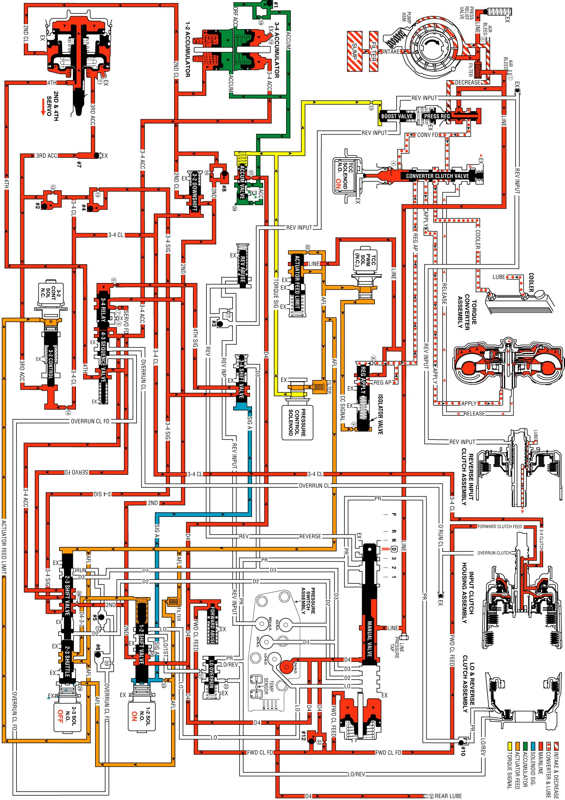

Overdrive Range, Fourth Gear - Torque Converter Clutch Applied
Overdrive Range, Fourth Gear - Torque Converter Clutch Applied
At higher vehicle speeds, the Hydra-matic 4L60-E transmission uses an overdrive gear ratio (fourth gear) in order to increase fuel economy and in order to maximize engine performance. When vehicle operating conditions are appropriate, the PCM energizes the 1-2 shift solenoid valve to shift the transmission into fourth gear.
1-2 Shift Solenoid (SS) Valve
Energized (turned ON) by the PCM, the normally open solenoid closes and blocks signal A fluid from exhausting through the solenoid. This creates pressure in the signal A fluid circuit.
2-3 Shift Solenoid (SS) Valve
De-energized (OFF) as in third gear, the 2-3 shift solenoid valve exhausts signal B fluid through the solenoid.
1-2 Shift Valve
D432 fluid pressure from the 2-3 shift valve and spring force hold the valve in the upshift position against signal A fluid pressure.
3-4 Shift Valve
Signal A fluid pressure moves the valve into the upshift position against the spring force. In this position, the valve routes 3-4 signal fluid into the 4th signal fluid circuit.
3-4 Relay Valve and 4-3 Sequence Valve
4th signal fluid pressure moves both valves into the upshift (fourth gear) position against the spring force acting on the 4-3 sequence valve. This causes the following changes:
^ Orificed (#7) 2nd fluid is routed through the 3-4 relay valve and into the servo feed fluid circuit.
^ Servo feed fluid is routed through the 4-3 sequence valve and into the 4th fluid circuit.
^ 3-4 accumulator fluid routed from the 2-3 shuttle valve is blocked by both valves.
2-4 Servo Assembly
4th fluid is routed through the center of the servo apply pin and acts on the apply side of the 4th apply piston. 4th fluid pressure moves the 4th apply piston against the apply pin spring force acting on the release side of the 4th apply piston. This action moves the apply pin and applies the 2-4 band in order to obtain fourth gear.
2-4 Band Apply Accumulation
2-3 Shift Valve Train
The valve train remains in the upshift position with the AFL fluid pressure acting on the 2-3 shift valve. In addition to its operation third gear, the 2-3 shift valve directs servo feed fluid into the 3-4 accumulator fluid circuit.
3-4 Accumulator Assembly
3-4 accumulator fluid pressure moves the 3-4 accumulator piston against spring force and orificed accumulator fluid pressure. This action absorbs initial 4th clutch apply fluid pressure in order to cushion the 2-4 band apply. Remember that both of the 3-4 accumulator and 4th fluid circuits are fed by servo feed fluid. As 3-4 accumulator fluid fills the accumulator, any air in the system will exhaust through office #19. This piston movement forces some orificed accumulator fluid out of the 3-4 accumulator assembly.
3-4 Accumulator Checkball (#1)
The accumulator fluid forced from the accumulator unseats the #1 checkball and enters the accumulator fluid circuit. This fluid is routed to the accumulator valve. This is shown by the arrow directions in the fluid circuit.
Accumulator Valve
Accumulator fluid forced from the 3-4 accumulator is orificed to the end of the accumulator valve. This fluid pressure, in addition to spring force and torque signal fluid pressure, regulates the exhaust of excess accumulator fluid pressure through the middle of the valve. This regulation helps control the 2-4 band apply feel.
3-2 Control Solenoid Valve and 3-2 Control Valve
The solenoid remains open and routes AFL fluid into the 3-2 signal fluid circuit. 3-2 signal fluid pressure holds the 3-2 control valve against spring force, thereby blocking the 3rd accumulator and 3-4 clutch fluid circuits.
Torque Converter Clutch Applies
TCC Solenoid Valve
When operating conditions are appropriate, the PCM energizes the normally open TCC solenoid valve. This closes the solenoid, blocks the converter feed fluid from exhausting, and creates pressure in the converter feed fluid circuit at the converter clutch apply valve and TCC solenoid valve.
Converter Clutch Apply Valve
Converter feed fluid pressure moves the valve against spring force and into the apply position. In this position, release fluid is open to an exhaust port, and regulated apply fluid fills the apply fluid circuit. Converter feed fluid is routed through the converter clutch apply valve to feed the cooler fluid circuit.
Torque Converter
Release fluid from behind the pressure plate exhausts through the end of the turbine shaft. Apply fluid pressure is routed between the converter hub and stator shaft where it enters the torque converter. This fluid applies the converter clutch against the converter cover and keeps the converter filled with fluid.
TCC Apply Checkball (#9)
Release fluid, exhausting from the converter, seats the #9 checkball located in the end of the turbine shaft, and is orificed around the ball. Orificing the exhausting release fluid controls the converter clutch apply rate, along with the TCC PWM solenoid valve.
TCC PWM Solenoid Valve
The torque converter clutch pulse width modulation (TCC PWM) solenoid valve controls the regulated apply valve position. This is done through the use of pulse width modulation (duty cycle operation). The solenoid duty cycle is controlled by the PCM in relation to vehicle operating conditions and regulates actuator feed limit (AFL) fluid into the CC signal circuit, through the #9 orifice, and to the isolator valve. This controls line pressure flow through the regulated apply valve, into the regulated apply circuit, and provides a smooth engagement of the TCC.
Overdrive Range, Fourth Gear - TCC Applied
Overdrive Range, Fourth Gear - TCC Applied:
